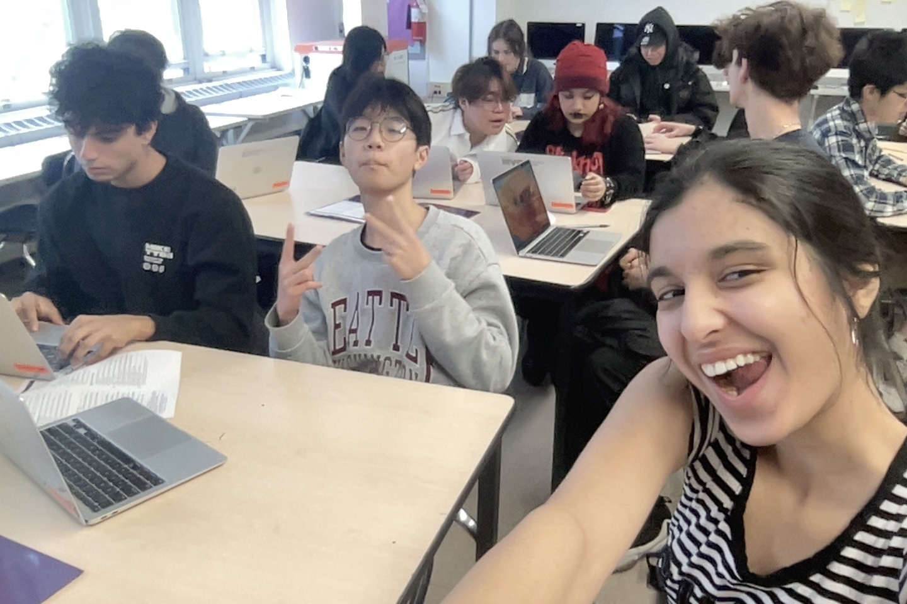

South Richmond Hill located in Queens, New York has been MY New York, the place where I was born and raised. This place is very significant to me because this is where I first took my first step, learned how to ride my first bike. I have been through many phases in this neighborhood. It shaped me into who I am now. It was my vision of my first brick of New York City. But mainly in a Punjabi prominent neighborhood there are many forms of judgment that this community of people has brought to teen girls and boys who are aiming for the high expectations of what a standard Indian person would like. This describes how the environment may seem, it is not the most luxurious place to be born into. But this is what I was born into. I was born into a place with crappy apartments, garbage piles on the streets, corner shops everywhere, and temples. At night, rats are running around through the garbage piles that are picked up by trucks. Apartment complexes are very small and are not like other suburb neighborhoods. Although grocery stores and delis are local and about a few blocks apart from each house, there are no beautiful historical buildings around. It is not the ideal place that a young individual would want to grow up in considering the high ideals of maintaining Indian culture and identity.
My whole life, people in my neighborhood have doubted me and made me feel vulnerable. I have been put in situations where I want to leave this place. As much as I drive this place away from it will always be a part of me. After All, these are my people and if anything I can change people’s perspective on how they view things as a society. Manhattan and the rest of New York is completely different from South Richmond Hill. In Manhattan people are known to be self centered and mind their own business. But in Richmond Hill it is the complete opposite. It is rather to be seen as nosey and an uncomfortable place/feeling.
Pursuing your passion openly in a neighborhood as Richmond Hill can not only be dangerous but also lead to jealousy. The Majority of Indian families want their children to get a degree in some sort of high end career path such as becoming a doctor or a lawyer and early an arranged marriage. But for young girls like me that is not something I want to put myself through. I have way more self worth and value than just being treated like a slave my whole life. We live in the United States of America. We live in a huge city with endless career opportunities. Why should I limit myself to what others tell me?
A glimpse of a traditional Punjabi girl’s life is not being able to dress a certain manner, act a certain manner, and follow directions of what other “men'' tell you to. Growing up I felt the pressure of not being able to walk out in what I wanted to wear because of how judgmental people are. They define you in every way they can no matter what. You can be wearing a crop top and shorts and they will sexualize you and cat-call you. They will call you a disgrace to religion despite your religious beliefs. If they see a female doing something that is not traditional to culture- such as social media or any concept of putting themselves out-they have many bad things to say. They will call you embarrassing and say you have no reputation. They will not accept you as one of them but as an outcast based on your beliefs. You can tell when they don’t allow certain things involving atheists and LGBTQ comunity rights. They want you to follow their rules whether or not you are happy or not.
